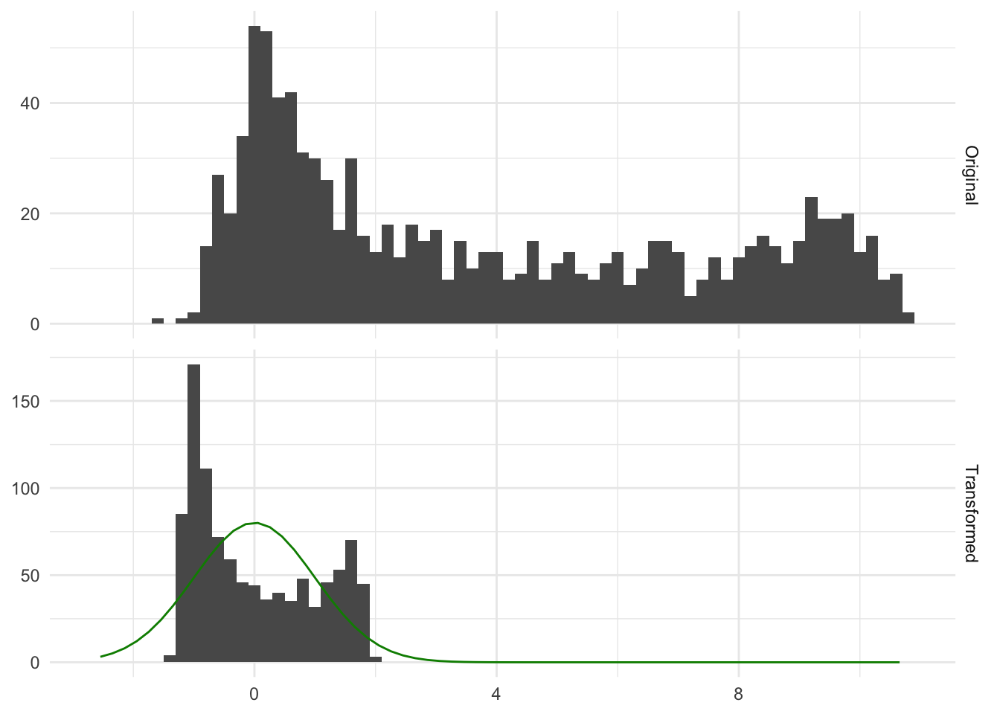
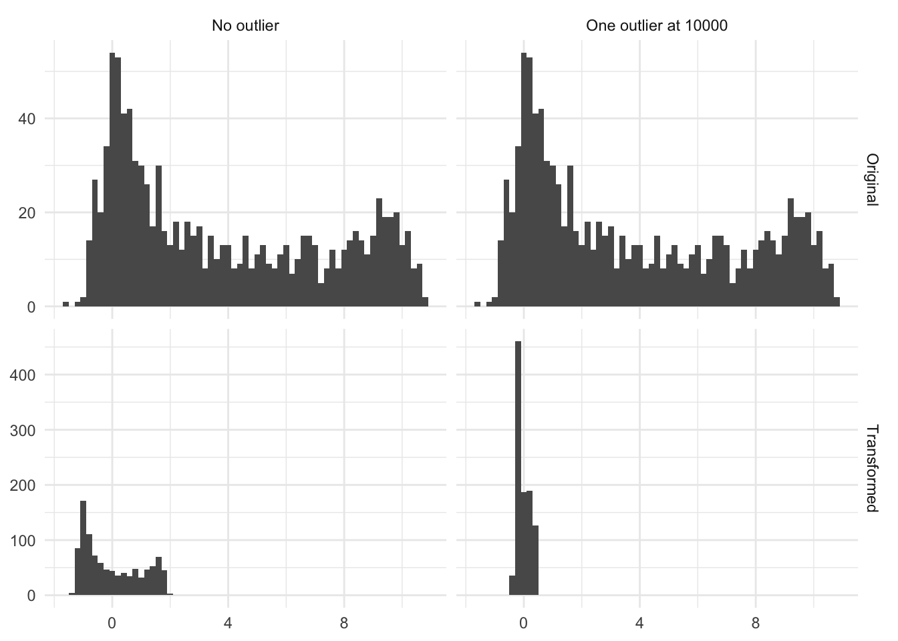

10 Normalization
Normalization is a method where we modify a variable by subtracting the mean and dividing by the standard deviation
\[X_{scaled} = \dfrac{X - \text{mean}(X)}{\text{sd}(X)}\]
Performing this transformation means that the resulting variable will have a mean of 0 and a standard deviation and variance of 1. This method is a learned transformation. So we use the training data to derive the right values of \(\text{sd}(X)\) and \(\text{mean}(X)\) and then these values are used to perform the transformations when applied to new data. It is a common misconception that this transformation is done to make the data normally distributed. This transformation doesn’t change the distribution, it scales the values. Below is a figure Figure 10.1 that illustrates that point
In Figure 10.1 we see some distribution, before and after applying normalization to it. Both the original and transformed distribution are bimodal, and the transformed distribution is no more normal than the original. And that is fine because the transformation did its job by moving the values close to 0 and a specific spread, which in this case is a variance of 1.
10.1 Pros and Cons
10.1.1 Pros
If you don’t have any severe outliers then you will rarely see any downsides to applying normalization
Fast calculations
Transformation can easily be reversed, making its interpretations easier on the original scale
10.1.2 Cons
- Not all software solutions will not be helpful when applying this transformation to a constant variable. A division by 0 error is likely what you will see
- Cannot be used with sparse data as it isn’t preserved because of the centering that is happening. If you only scale the data you don’t have a problem
- This transformation is highly affected by outliers, as they affect the mean and standard deviation quite a lot
Below is the figure Figure 10.2 is an illustration of the effect by having a single high value. In this case, a single observation with the value 10000 moved the transformed distribution much tighter around zero. And all but removed the variance of the non-outliers.

10.2 R Examples
We will be using the ames data set for these examples.
library(recipes)
Attaching package: 'recipes'The following object is masked from 'package:stats':
steplibrary(modeldata)
data("ames")
ames |>
select(Sale_Price, Lot_Area, Wood_Deck_SF, Mas_Vnr_Area)# A tibble: 2,930 × 4
Sale_Price Lot_Area Wood_Deck_SF Mas_Vnr_Area
<int> <int> <int> <dbl>
1 215000 31770 210 112
2 105000 11622 140 0
3 172000 14267 393 108
4 244000 11160 0 0
5 189900 13830 212 0
6 195500 9978 360 20
7 213500 4920 0 0
8 191500 5005 0 0
9 236500 5389 237 0
10 189000 7500 140 0
# ℹ 2,920 more rows{recipes} provides a step to perform scaling, centering, and normalization. They are called step_scale(), step_center() and step_normalize() respectively.
Below is an example using step_scale()
scale_rec <- recipe(Sale_Price ~ ., data = ames) |>
step_scale(all_numeric_predictors()) |>
prep()
scale_rec |>
bake(new_data = NULL, Sale_Price, Lot_Area, Wood_Deck_SF, Mas_Vnr_Area)# A tibble: 2,930 × 4
Sale_Price Lot_Area Wood_Deck_SF Mas_Vnr_Area
<int> <dbl> <dbl> <dbl>
1 215000 4.03 1.66 0.627
2 105000 1.47 1.11 0
3 172000 1.81 3.11 0.605
4 244000 1.42 0 0
5 189900 1.76 1.68 0
6 195500 1.27 2.85 0.112
7 213500 0.624 0 0
8 191500 0.635 0 0
9 236500 0.684 1.88 0
10 189000 0.952 1.11 0
# ℹ 2,920 more rowsWe can also pull out the value of the standard deviation for each variable that was affected using tidy()
scale_rec |>
tidy(1)# A tibble: 33 × 3
terms value id
<chr> <dbl> <chr>
1 Lot_Frontage 33.5 scale_FGmgk
2 Lot_Area 7880. scale_FGmgk
3 Year_Built 30.2 scale_FGmgk
4 Year_Remod_Add 20.9 scale_FGmgk
5 Mas_Vnr_Area 179. scale_FGmgk
6 BsmtFin_SF_1 2.23 scale_FGmgk
7 BsmtFin_SF_2 169. scale_FGmgk
8 Bsmt_Unf_SF 440. scale_FGmgk
9 Total_Bsmt_SF 441. scale_FGmgk
10 First_Flr_SF 392. scale_FGmgk
# ℹ 23 more rowsWe could also have used step_center() and step_scale() together in one recipe
center_scale_rec <- recipe(Sale_Price ~ ., data = ames) |>
step_center(all_numeric_predictors()) |>
step_scale(all_numeric_predictors()) |>
prep()
center_scale_rec |>
bake(new_data = NULL, Sale_Price, Lot_Area, Wood_Deck_SF, Mas_Vnr_Area)# A tibble: 2,930 × 4
Sale_Price Lot_Area Wood_Deck_SF Mas_Vnr_Area
<int> <dbl> <dbl> <dbl>
1 215000 2.74 0.920 0.0610
2 105000 0.187 0.366 -0.566
3 172000 0.523 2.37 0.0386
4 244000 0.128 -0.742 -0.566
5 189900 0.467 0.936 -0.566
6 195500 -0.0216 2.11 -0.454
7 213500 -0.663 -0.742 -0.566
8 191500 -0.653 -0.742 -0.566
9 236500 -0.604 1.13 -0.566
10 189000 -0.336 0.366 -0.566
# ℹ 2,920 more rowsUsing tidy() we can see information about each step
center_scale_rec |>
tidy()# A tibble: 2 × 6
number operation type trained skip id
<int> <chr> <chr> <lgl> <lgl> <chr>
1 1 step center TRUE FALSE center_tSRk5
2 2 step scale TRUE FALSE scale_kjP2v And we can pull out the means using tidy(1)
center_scale_rec |>
tidy(1)# A tibble: 33 × 3
terms value id
<chr> <dbl> <chr>
1 Lot_Frontage 57.6 center_tSRk5
2 Lot_Area 10148. center_tSRk5
3 Year_Built 1971. center_tSRk5
4 Year_Remod_Add 1984. center_tSRk5
5 Mas_Vnr_Area 101. center_tSRk5
6 BsmtFin_SF_1 4.18 center_tSRk5
7 BsmtFin_SF_2 49.7 center_tSRk5
8 Bsmt_Unf_SF 559. center_tSRk5
9 Total_Bsmt_SF 1051. center_tSRk5
10 First_Flr_SF 1160. center_tSRk5
# ℹ 23 more rowsand the standard deviation using tidy(2)
center_scale_rec |>
tidy(2)# A tibble: 33 × 3
terms value id
<chr> <dbl> <chr>
1 Lot_Frontage 33.5 scale_kjP2v
2 Lot_Area 7880. scale_kjP2v
3 Year_Built 30.2 scale_kjP2v
4 Year_Remod_Add 20.9 scale_kjP2v
5 Mas_Vnr_Area 179. scale_kjP2v
6 BsmtFin_SF_1 2.23 scale_kjP2v
7 BsmtFin_SF_2 169. scale_kjP2v
8 Bsmt_Unf_SF 440. scale_kjP2v
9 Total_Bsmt_SF 441. scale_kjP2v
10 First_Flr_SF 392. scale_kjP2v
# ℹ 23 more rowsSince these steps often follow each other, we often use the step_normalize() as a shortcut to do both operations in one step
scale_rec <- recipe(Sale_Price ~ ., data = ames) |>
step_normalize(all_numeric_predictors()) |>
prep()
scale_rec |>
bake(new_data = NULL, Sale_Price, Lot_Area, Wood_Deck_SF, Mas_Vnr_Area)# A tibble: 2,930 × 4
Sale_Price Lot_Area Wood_Deck_SF Mas_Vnr_Area
<int> <dbl> <dbl> <dbl>
1 215000 2.74 0.920 0.0610
2 105000 0.187 0.366 -0.566
3 172000 0.523 2.37 0.0386
4 244000 0.128 -0.742 -0.566
5 189900 0.467 0.936 -0.566
6 195500 -0.0216 2.11 -0.454
7 213500 -0.663 -0.742 -0.566
8 191500 -0.653 -0.742 -0.566
9 236500 -0.604 1.13 -0.566
10 189000 -0.336 0.366 -0.566
# ℹ 2,920 more rowsAnd we can still pull out the means and standard deviations using tidy()
scale_rec |>
tidy(1) |>
filter(terms %in% c("Lot_Area", "Wood_Deck_SF", "Mas_Vnr_Area"))# A tibble: 6 × 4
terms statistic value id
<chr> <chr> <dbl> <chr>
1 Lot_Area mean 10148. normalize_ucdPw
2 Mas_Vnr_Area mean 101. normalize_ucdPw
3 Wood_Deck_SF mean 93.8 normalize_ucdPw
4 Lot_Area sd 7880. normalize_ucdPw
5 Mas_Vnr_Area sd 179. normalize_ucdPw
6 Wood_Deck_SF sd 126. normalize_ucdPw